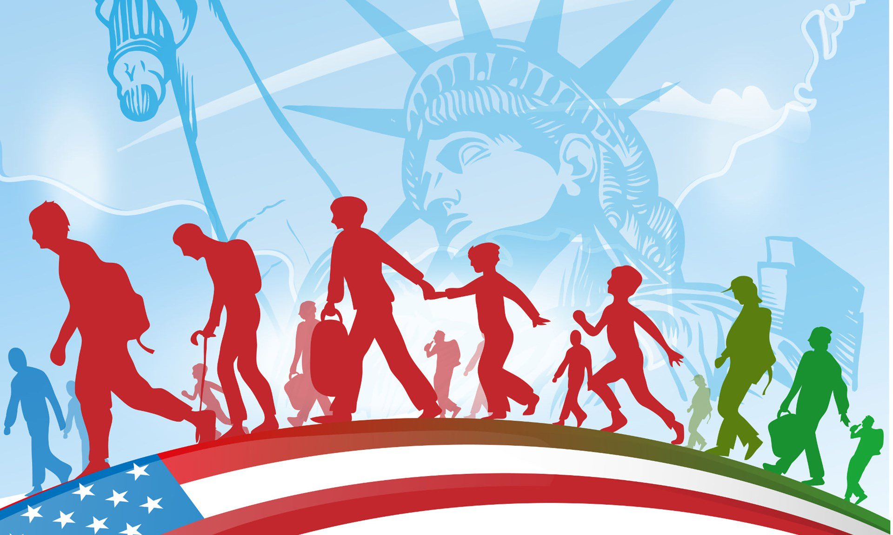

In recent years, immigration has been making headlines more often. People emigrate from one country to another due to conflict, war, to escape persecution or prejudices and some even voluntarily emigrate. Immigration can have positive and negative impacts on both the host country as well as the original country. When people immigrate, they need to find work. This can cause the problem of the citizens themsleves having more trouble to find work which is why some people have an issue with letting people immigrate. The process of immigrating into a new country can already be extremely overwhelming and scary for many. Your support could help reuinte a family and help save them from injustices!

Want to help eliminate this issue? See what opportunities are available for you below!